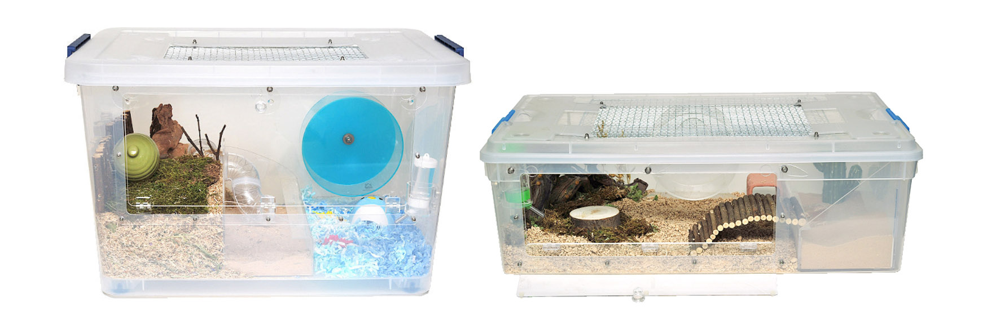
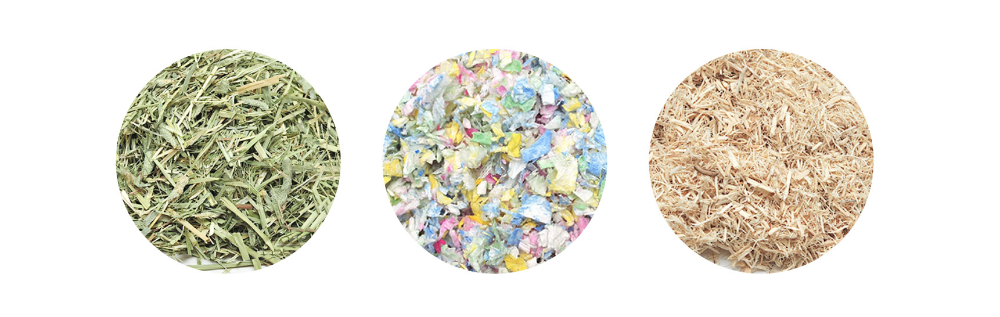
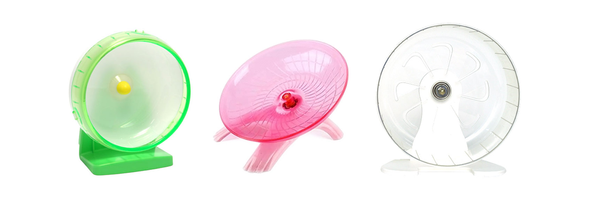

햄스터 용품 준비는 미리미리!
우선 햄스터를 키우기 위해서 절대적으로 필요한 기본 용품들이 있다. 분양받기 전에 미리 준비해 두면 햄스터를 집으로 데려왔을 때, 햄스터와 집사 둘 다 당황하는 일은 없을 것이다. 인터넷 쇼핑몰에서 여러 상품들의 후기들을 볼 수 있으니 꼭 참고하자.
1. 리빙박스
리빙박스는 햄스터 집을 꾸미기 위한 기본중의 기본이다. 높이가 너무 낮아 탈출 위험이 있거나 햄스터가 이빨로 갉을 수 있는 재질은 피해야 한다. 햄스터 용품 쇼핑몰에서 햄스터를 키우고 꺼내기 쉽게 앞문, 윗뚜껑을 개조한 리빙박스를 팔기도 한다.
2. 베딩
땅파는 것을 좋아하는 햄스터를 위해, 그리고 집 온도 유지를 위해 리방박스 안에 베딩을 두둑이 깔아야 한다. 햄스터 마다 좋아하는 베딩의 종류가 다르기 때문에 소량씩 구매해서 테스트 해보는 것을 추천한다.
3. 쳇바퀴
>야생 상태에서 햄스터는 이동량이 최소 5KM에서 6KM이기에 좁은 리빙박스에서 활동을 하려면 필수다. 야행성인 햄스터가 밤에 쳇바퀴를 돌리기에 자신이 소음에 민감하다면 무소음 쳇바퀴를 구매하는 것을 추천한다.
4. 화장실과 모래
집 한편에 화장실을 따로 만들어 화장실용 모래를 2cm 이상 깔아두도록 한다. 설치류들은 보통 화장실을 사용하기 전에 모래를 파는 행동을 하기 때문에, 또 소변을 간편히 청소하기 위해 화장실 모래가 필요하다. 소변으로 뭉친 모래는 자주 청소해 줘야 냄새가 나지 않는다. 모래를 갈아줄 때, 소변으로 인해 뭉친 모래를 한두 개 정도를 넣어주면 햄스터에게 이곳이 화장실이라는 인식을 갖게 할 수 있다.
5. 습수기,급식기와 사료
햄스터가 살아가기에 물과 사료는 기본 중의 기본. 급식기는 작은 그릇 정도면 된다.
사료는 gmo/lmo free 제품을 선택하는 것이 좋고, 시중에 판매하는 혼합사료, 식물성 사료, 곡류 사료, 동물성 사료가 있으며
보통 혼합사료를 가장 많이 사용한다. 또 햄스터마다 좋아하는 사료의 종류가 다르기 때문에 조금씩 구매하여 테스트해보는 것을 추천한다. 하지만 한가지 사료만 먹을 경우 영양분이 불균형하게 섭취가 되어 각종 질병에 노출될 수 있으니 주의해야 한다. 해바라기씨나 아몬드 등 견과류들은 햄스터들이 좋아하지만 많이 먹으면 비만에 걸리게 되며 비만은 만병의 근원이 된다. 따라서 주 사료로 쓰지 않도록 한다.